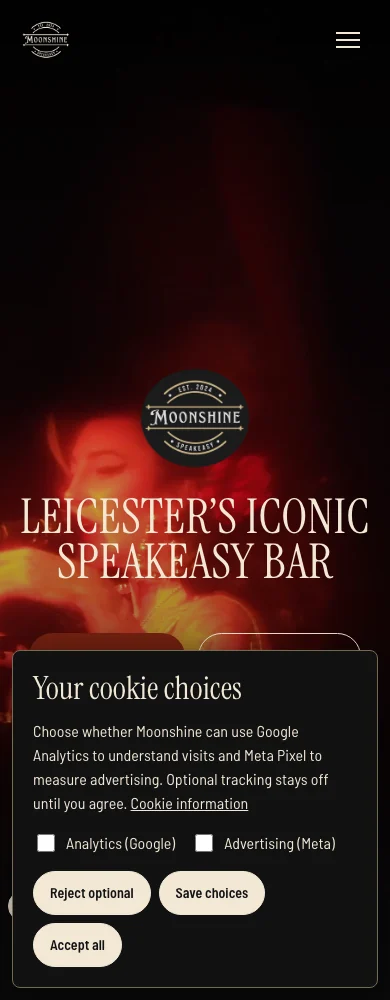
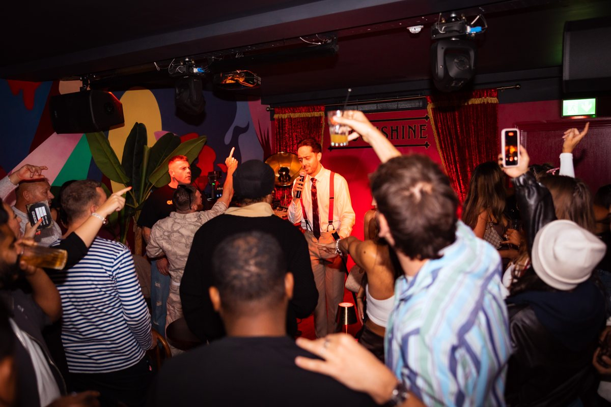
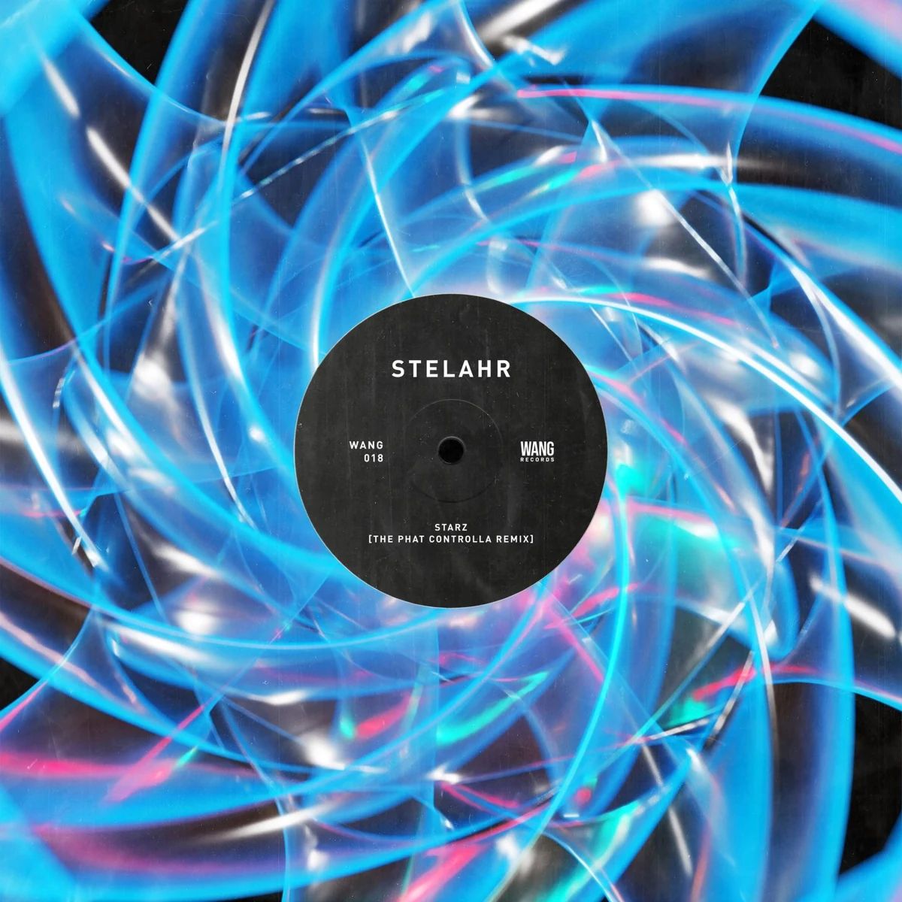

A closer look at the briefs, ideas and decisions behind the work we deliver.
Moonshine website, captured 23 October 2026.

Websites / Copywriting · Moonshine Speakeasy
Moonshine: a website that feels like the venue
A bespoke website for Moonshine Speakeasy, bringing a complete design overhaul and full copy rewrite together to reflect the venue's character, help guests plan their visit and support its visibility in search.
A programme affects the audience. The audience shapes the offer. The operation determines how well it all works. We connect those decisions across five areas.


Programming & Experience
Concepts, artist programming and event delivery that give people a reason to come and an experience worth returning for.
Our experience comes from working in hospitality, music and events. We've booked artists, delivered programmes and dealt with the detail that sits behind the doors opening.
That experience shapes our advice. We consider the audience, the budget, the team and how an idea will work in practice. Then we take responsibility for the work we've agreed to deliver.
For people building places and experiences that matter.
We work with hospitality businesses, venue teams, festivals, brands and cultural projects. You might be shaping a new concept, improving an established operation or deciding how to grow.
Our approach also supports venue groups, cultural organisations and place partners bringing several teams and priorities together. We establish the objective, the people involved and the responsibilities needed to move the work forward.
Whatever the starting point, we look at the business behind the brief and the people it needs to work for.
A clear plan. People who follow it through.
We establish what needs to change, explain our recommendations and agree the work required. From there, we bring together the right people, manage delivery and review progress with you.